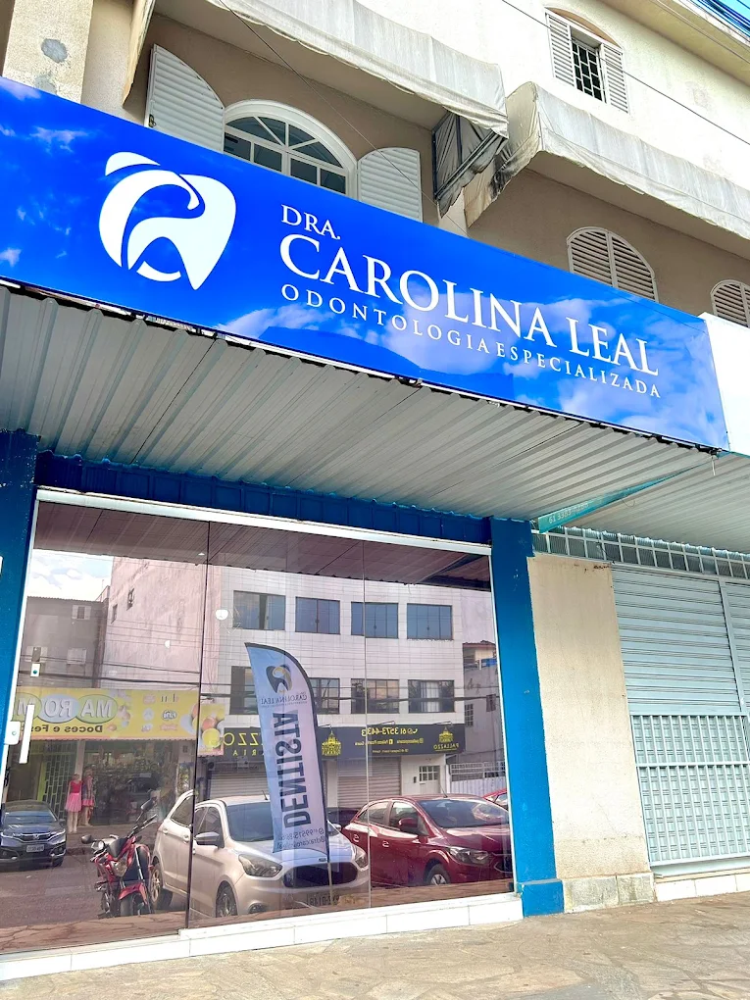

Cuidado com o seu sorriso, do primeiro detalhe ao último.
Odontologia no Guará II, em Brasília. Atendimento sem pressa, explicado passo a passo, pensado também para quem tem medo de dentista.
Cada dente é único. Cada plano de tratamento também.

Você chegou.
QE 40, Conj. H, Lote 11, Loja 4, no Guará II. Seja bem-vinda, seja bem-vindo.
Tratamentos
Do check-up ao sorriso novo
Cuidamos da saúde e da estética da sua boca com o mesmo cuidado. Na avaliação, conversamos sobre o que faz sentido para você.
-
Prevenção e limpeza
Consultas de rotina, profilaxia e orientação de higiene para manter dentes e gengivas saudáveis por mais tempo.
-
Clareamento dental
Protocolos de consultório e caseiro supervisionado, com controle de sensibilidade e resultado natural.
-
Restaurações estéticas
Resinas que devolvem forma e cor ao dente, com acabamento que se confunde com o esmalte natural.
-
Implantes dentários
Reposição de dentes perdidos com planejamento cuidadoso, segurança e conforto para mastigar.
-
Ortodontia e alinhadores
Aparelhos fixos e alinhadores transparentes para alinhar o sorriso e equilibrar a mordida.
-
Cirurgias e sisos
Extrações, inclusive de sisos, com anestesia cuidadosa e acompanhamento de perto no pós-operatório.

A clínica
Um consultório feito para você relaxar
Muita gente chega aqui com medo de dentista e sai indicando para a família. Isso acontece porque o cuidado começa antes da cadeira.
-
Conforto de verdade
Cadeira com massagem e música ambiente para deixar o atendimento mais tranquilo.
-
Atendimento sem pressa
Tempo para ouvir, examinar e explicar cada etapa antes de começar.
-
Mão leve
Anestesia cuidadosa e técnica delicada, durante o procedimento e no pós-operatório.
-
Perto de você
No comércio da QE 40, Guará II, com atendimento também aos sábados pela manhã.
Primeira consulta
Como funciona
-
Fale com a gente
Mande uma mensagem no WhatsApp e escolha o melhor horário, inclusive sábado de manhã.
-
Avaliação completa
Exame clínico detalhado e uma conversa sobre o que você deseja para o seu sorriso.
-
Plano claro
Você conhece as opções, prazos e valores com transparência antes de decidir.
Depoimentos
Quem perdeu o medo conta
-
Para quem tinha trauma de dentista, minha experiência foi maravilhosa. Com a Dra. Carolina eu perdi o medo: fiz procedimentos e não senti absolutamente nada, tanto durante quanto no pós-operatório. Super indico, mãos de fada.
Paciente da clínicaAvaliação no Google -
O atendimento da Dra. Carol é diferencial! Em especial a cadeira que faz massagem enquanto você é atendido e as músicas que te deixam mais tranquila. Eu não sou muito fã de dentista, mas da Carol eu sou.
Gabriely FlorencioAvaliação no Google -
Atendimento excelente, impecável! Desde o WhatsApp até a clínica. A Dra. Carolina explica tudo certinho e nos deixa bem à vontade. Arranquei os 4 sisos e foi bem tranquilo. Tudo perfeito!
Sara Gabriela Nascimento SouzaAvaliação no Google
Contato
Venha nos visitar
Endereço
QE 40, Conj. H, Lote 11, Loja 4
Guará II, Brasília-DF · CEP 71070-082
Telefone e WhatsApp (61) 99515-8616
E-mail doutoracarolinaleal@gmail.com
Horário de atendimento
| Segunda a sexta | 8h às 18h |
|---|---|
| Sábado | 8h às 12h |
| Domingo | Fechado |